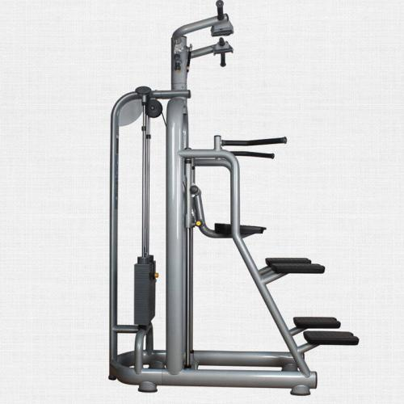
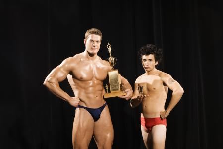

邦邦健身俱乐部位于山西太原城，于2015年1月成立，是盐城目前规模最大、设施齐全、最专业的高档会员制健身会所，面积2000余平米。时尚的经营路线，倡导积极健康的生活方式！提供全面、科学、专业的尊贵服务。
俱乐部引进了目前国际上最为流行的动感单车，会呼吸的多动能电动跑步机，全天候的有线电视节目、让你边跑步边看电视，超大的乒乓球馆拥有红双喜彩虹台和国际比赛专用地胶，最新引进的壁球馆为泰州地区所独有，宽敞的淋浴区、更衣室、水吧、休息网吧等配套设施。
俱乐部设有：动感单车、高温瑜伽、常温瑜伽、力量健身、器械健身、斯诺克、九球台、跆拳道，超大体操房（有氧拉丁、肚皮舞、搏击操、太极养生课程、踏板操、塑形操）等。
59岁“健身大叔”获世界健美赛第四
在江苏徐州的健美圈，朱秦路文算是一个标志性的人物，今年59岁的他从13年前开始练习健美。本月初，他在蒙古乌兰巴托举行的2017年WBPF世界健美健身锦标赛中，代表中国队参赛，获得了第四名的成绩。

健身达人|跑神朱东海
由齐鲁壹点主办的第一届“健身达人”活动今天开始颁奖仪式啦，首先第一位上场的小伙是我们山东泰山土生土长的“跑男”李东海。获奖时他说，他从小喜欢跑步，这一跑就是16年。特别喜欢在跑道上奔跑带来的快乐。
59岁“健身大叔”获世界健美赛第四
在江苏徐州的健美圈，朱秦路文算是一个标志性的人物，今年59岁的他从13年前开始练习健美。本月初，他在蒙古乌兰巴托举行的2017年WBPF世界健美健身锦标赛中，代表中国队参赛，获得了第四名的成绩。

仰卧起坐斜着练
基本动作和仰卧起坐一样，但需要注意起的时候身体要面向左侧或右侧，可以一次向左一次向右，也可以左几个右几个，起来时头要尽量往地面上探，做完必须做转腰动作，放松腰部及肋骨处肌肉
17-10-25

倒立莲花
当你练习倒立时，下面五条安全指南也许有帮助： 1、知道你在做什么。2、永远不要做你能力以外的事3、在一个安全、空旷的地方做练习。 4、拥有基本的体育常识和技能。5、不要冒险。掌握好倒立后，试着弯曲膝盖，双脚弯向大腿根部并交叉
17-10-25

平行引体向上
1.两手双手掌心相对抓住双杠，两脚离地，两臂身体自然下垂伸直。2.用背阔肌的收缩力量将身体往上拉起，直到单杠触及或接近胸部。静止一秒钟，使背阔肌彻底收缩。3.然后逐渐放松背阔肌，让身体徐徐下降，直到回复完全下垂，重复再做。
17-10-25
如何找到我们
电话：400-006-8100
邮箱：service:@neuclond.cn
市场合作：marketing@neuclond.cn
新媒体:
- 新浪微博 前往
- 邦邦俱乐部微信公众号

- 健身公众号

地址：

山西太原下元大马村安康医院旁巷仔内往西200米